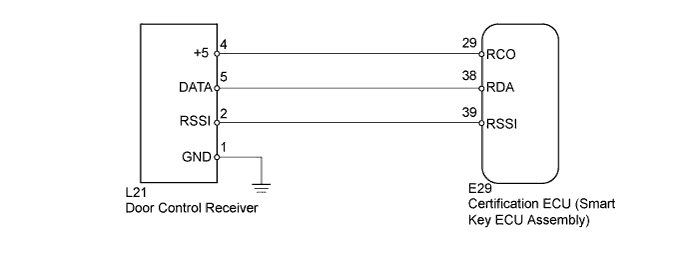
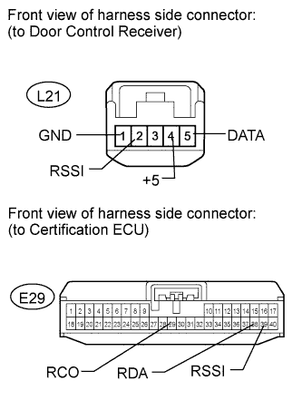
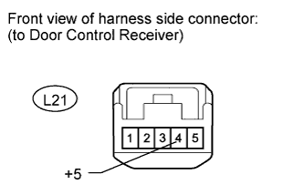

DTC B1242 Wireless Door Lock Tuner Circuit Malfunction |
| DTC Code | DTC Detection Condition | Trouble Area |
| B1242 | One of following conditions is met:
|
|

| 1.CHECK HARNESS AND CONNECTOR (CERTIFICATION ECU - DOOR CONTROL RECEIVER) |
 |
Disconnect the E29 ECU connector.
Disconnect the L21 receiver connector.
Measure the resistance according to the value(s) in the table below.
| Tester Connection | Condition | Specified Condition |
| E29-39 (RSSI) - L21-2 (RSSI) | Always | Below 1 Ω |
| E29-38 (RDA) - L21-5 (DATA) | ||
| E29-29 (RCO) - L21-4 (+5) | ||
| E29-17 (E) - Body ground | ||
| L21-1 (GND) - Body ground | ||
| E29-39 (RSSI) or L21-2 (RSSI) - Body ground | Always | 10 kΩ or higher |
| E29-38 (RDA) or L21-5 (DATA) - Body ground | ||
| E29-29 (RCO) or L21-4 (+5) - Body ground |
|
| ||||
| OK | |
| 2.CHECK CERTIFICATION ECU (SMART KEY ECU ASSEMBLY) |
 |
Disconnect the L21 receiver connector.
Reconnect the E29 ECU connector.
Measure the voltage according to the value(s) in the table below.
| Tester Connection | Condition | Specified Condition |
| L21-4 (+5) - Body ground | Always | 4.5 to 5.4 V |
|
| ||||
| OK | |
| 3.REPLACE DOOR CONTROL RECEIVER |
Temporarily replace the door control receiver with a new one (Click here).
| NEXT | |
| 4.CHECK FOR DTC |
Clear the DTC (Click here).
Recheck for DTC (Click here).
|
| ||||
| OK | ||
| ||